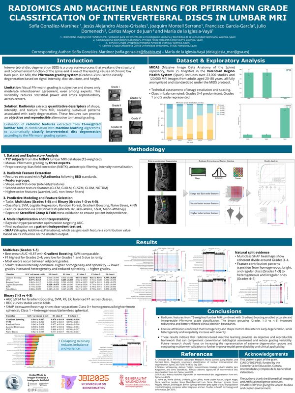
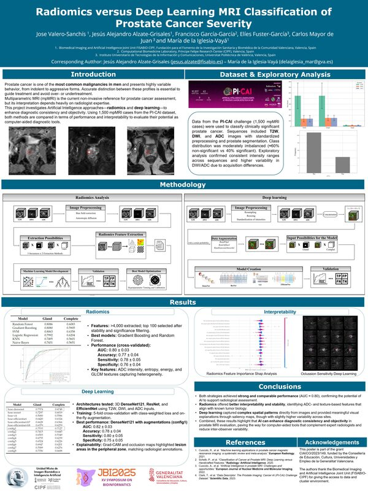
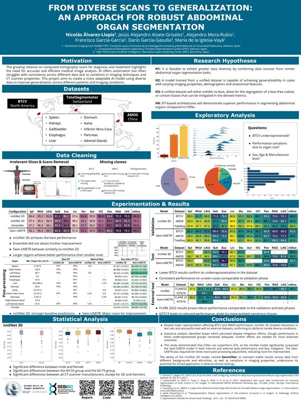
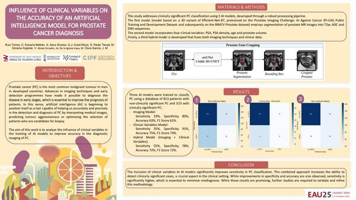

RESULTADOS
Publicaciones y resultados científicos
Nuestra investigación se traduce en publicaciones científicas, datasets abiertos y herramientas de código abierto para la comunidad biomédica.
RESULTADOS
Nuestra investigación se traduce en publicaciones científicas, datasets abiertos y herramientas de código abierto para la comunidad biomédica.
PUBLICACIONES CIENTÍFICAS
CONGRESOS Y COMUNICACIONES
Trabajos presentados por el equipo en congresos científicos.

JBI2025 · XV Symposium on Bioinformatics Radiomics and machine learning for Pfirrmann grade classification of intervertebral discs in lumbar MRI
JBI2025 · XV Symposium on Bioinformatics Radiomics versus Deep Learning MRI Classification of Prostate Cancer Severity
JBI2024 · XIV Symposium on Bioinformatics From diverse scans to generalization: an approach for robust abdominal organ segmentation
EAU25 · Madrid, marzo 2025 Influence of clinical variables on the accuracy of an artificial intelligence model for prostate cancer diagnosis